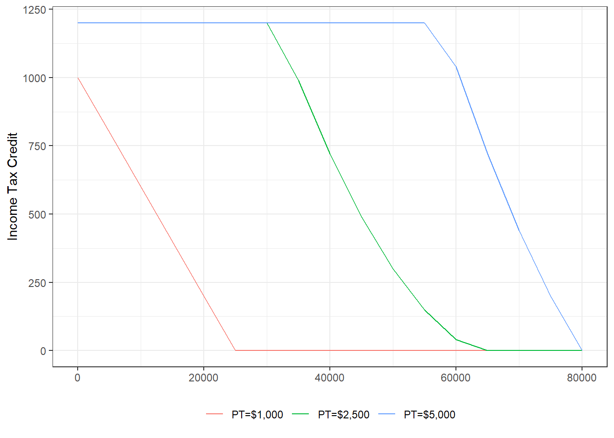

11.5 Technical Aspects of Property Taxes
Equity-relatedmetrics measure dispersion of assessed values and the degree of tax progressiveness. Two commonly used measures are the coefficient of dispersion (COD) and the price-related differential (PRD).
Property tax relief policies aimed at enhancing equity include the homestead exemption, which reduces the taxable value of a primary residence, and the circuit breaker, which provides tax relief based on income, particularly for lower-income households.
11.5.1 Coefficicent of Dispersion (COD)
The coefficient of dispersion (COD) serves as a measure of the dispersion of assessed values and horizontal equity. It reflects the average deviation around the median assessment ratio as a percentage of the median. This measure indicates how closely assessed values are clustered around the median, with less variation being a positive sign. In terms of interpretation, a smaller COD is generally viewed as positive. The acceptable range for COD is typically 10% to 15% for residential properties and 15% to 20% for commercial properties.
| Property | A | B | C |
|---|---|---|---|
| Market value | $40,000 | $60,000 | $100,000 |
| Assessed value | $25,000 | $30,000 | $40,000 |
| Assessment ratio | 0.625 | 0.500 | 0.400 |
| Difference from median | 0.125 | 0.000 | 0.100 |
Calculations
- Median assessment ratio: 0.5 (median of 0.4, 0.5, and 0.625)
- Average difference from median: \((0.125+0+0.01)/3=0.075\)
- COD: \(0.075/0.5=0.15\)
- Average of assessment ratios are 15% from the median
11.5.3 Homestead Exemption: Overview
Homestead exemption: Absolute reduction in taxable property values (e.g., $30,000).
- Subtraction of exemption from assessed value to calculate tax
- Lower home value \(\Rightarrow\) Higher percent reduction in taxes
- Application to owner-occupied housing only (not renters)
Advantages
- Provision of tax relief and improved vertical equity for lower to middle income homeowners
Disadvantages
- Not helpful to renters who are often lower income households
- Not helpful to cities with large portion of renters
| Property A | Property B | |
|---|---|---|
| Market value | $100,000 | $500,000 |
| Assessment ratio | 70% | 70% |
| Assessed value | $70,000 | $350,000 |
| Exemption | $30,000 | $30,000 |
| Taxed value | $40,000 | $320,000 |
| Tax rate | 4% | 4% |
| Tax without exemption | $2,800 | $14,000 |
| Tax with exemption | $1,600 | $12,800 |
| Real rate without exemption | 2.80% | 2.80% |
| Real rate with exemption | 1.60% | 2.60% |
11.5.4 Circuit Breaker
Characteristics
- Provides rebate/credit on state income tax for high property taxes.
- Neither lowers property tax bill nor directly affects local tax revenue.
- Can be applied to both, homeowners and renters, and is usually means-tested.
Circuit breaker structure \[R=p \cdot (PT-k \cdot I)\] where
- \(R\): Tax credit
- \(p\): Percentage specified by law and usually declining with income after a threshold
- \(PT\): Property tax paid (estimate for renters)
- \(k \cdot I\): Excessive tax burden specified as percent (\(k\)) of income (\(I\))
Simple example: Tax credit of 50% on excess burden if property taxes larger than 5% of income
- Income: $30,000
- Property tax: $2,000
- Income tax credit: \(R=50\% \cdot (\$2,000-5\% \cdot \$30,000)=\$250\)
More complex example
- Tax credit limit: $1,200
- Credit reduction (i.e., reduction in \(p\)): 10 percentage points for every $5,000 over $30,000 of income
- \(k=4%=0.04\)
More Complex EXample 
The circuit breaker system offers several advantages and one notable disadvantage. One of the key advantages is that property tax relief can be specifically targeted to lower and middle-income homeowners and renters, making it an effective tool for addressing equity concerns. Additionally, the benefit can decrease as income increases, allowing for a more tailored approach to providing relief based on financial need.
However, a significant disadvantage of the circuit breaker system is that households can only benefit if they file income tax returns. This limitation may exclude some eligible households that do not file, thereby reducing the reach of the program.